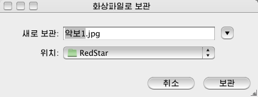

파일차림표\화상파일로 보관...
이 차림표를 리용하여 작성중의 악보를
화상파일로 보관합니다. 작성중의 악보가 여러개의 페지로 되여있는 경우 페지별로 화상파일을 작성합니다.
<파일\화상파일로
보관...>을 선택하면 <화상파일로 보관>대화창이 표시됩니다.

이 프로그람에서 보관가능한 화상파일은 *.jpg 입니다.
이 프로그람에서는 악보페지별로 화상파일을 작성합니다. 따라서 악보페지가 4개인 경우 악보파일을 화상파일로 보관하면 4개의 화상파일이 작성됩니다.